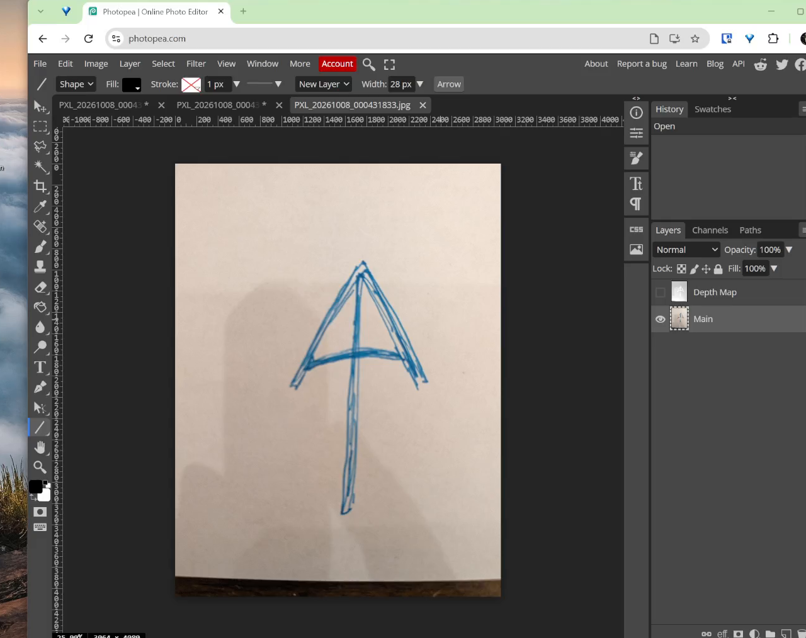
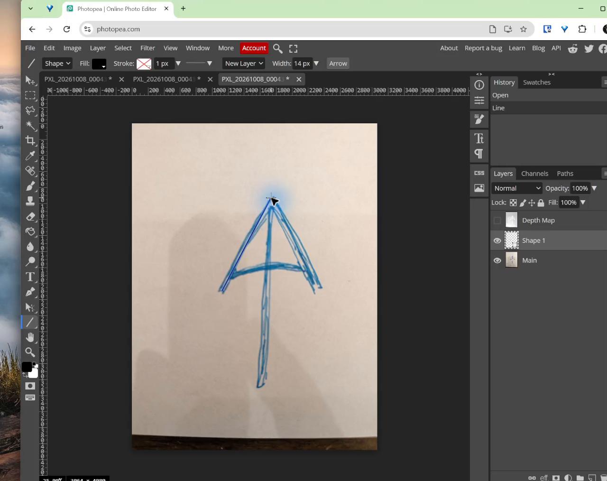
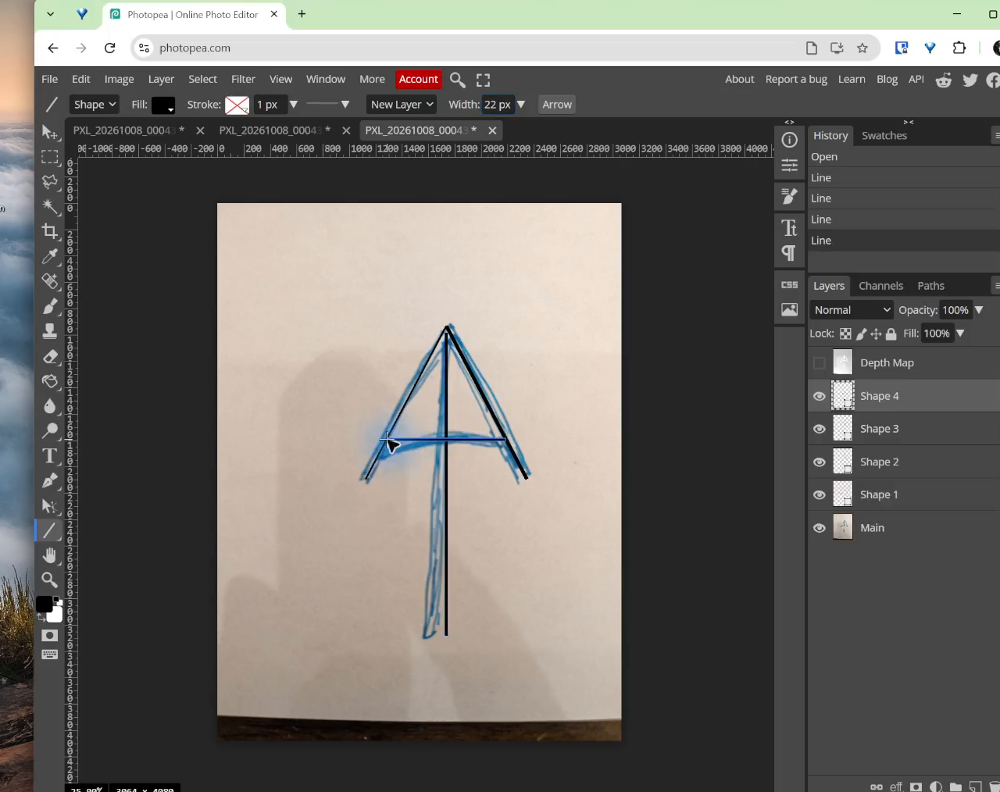
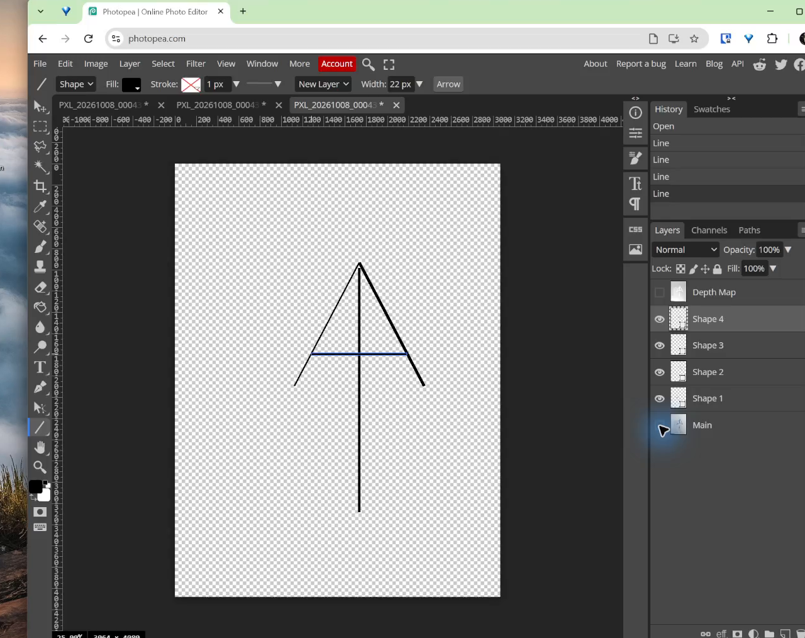
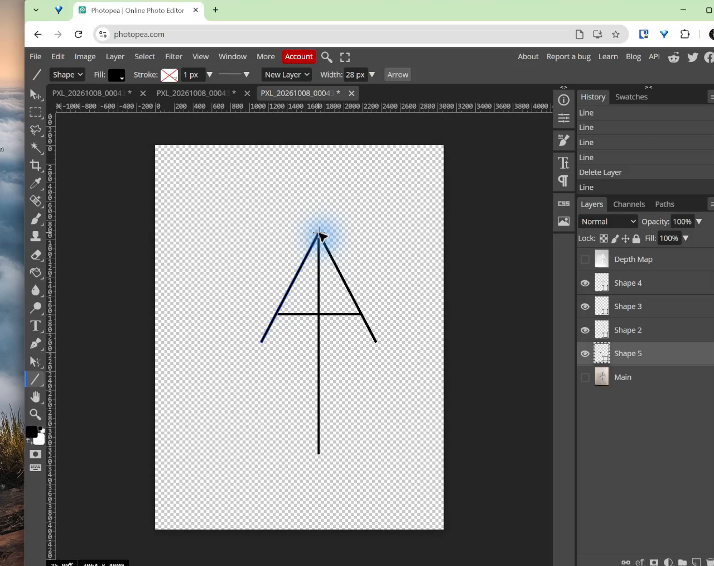
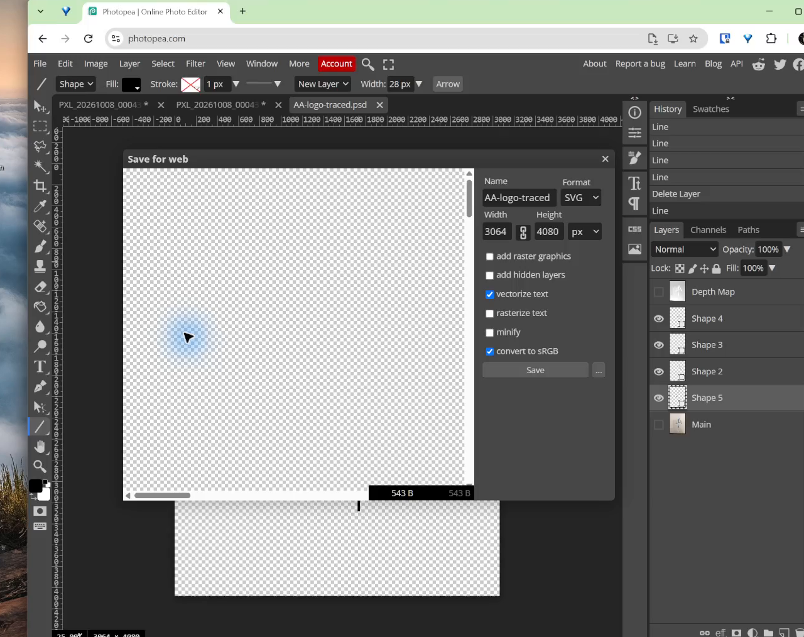
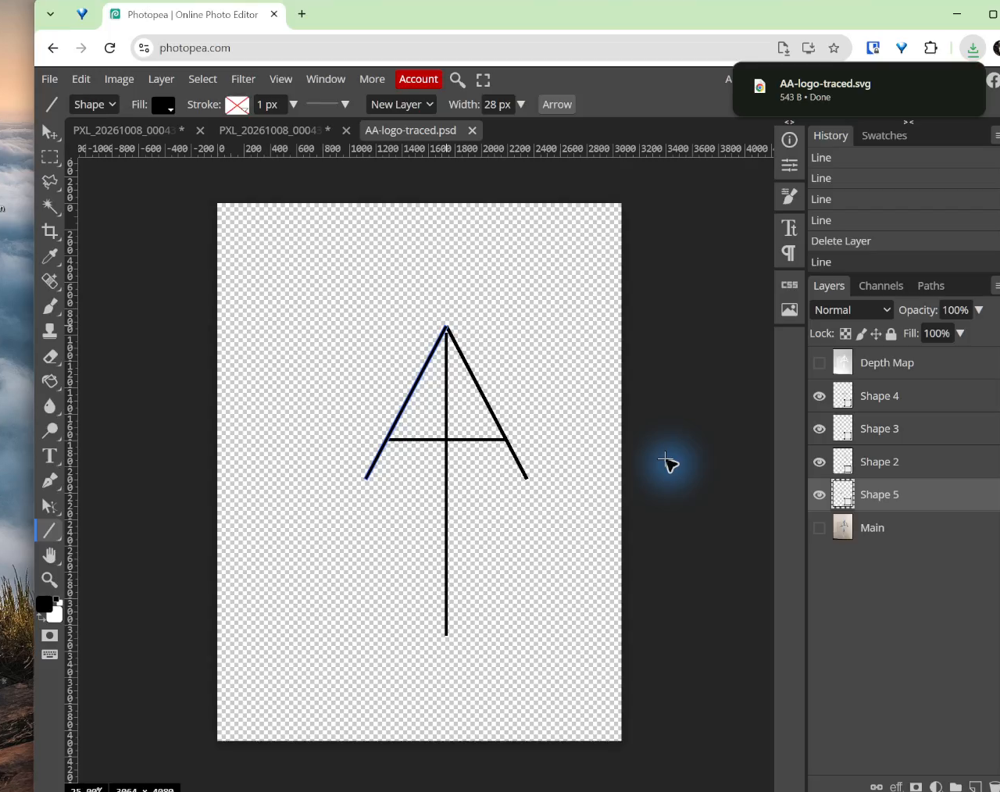

Lesson 2: Trace a Rough Logo in Photopea
Learning goals
By the end of this activity:
- I can open a sketch in Photopea.
- I can trace the sketch with editable lines.
- I can make both sides of a logo look even.
- I can save a PSD and export an SVG.
Why this is useful
Your first sketch does not need to be perfect. Editable lines let you fix the shape while keeping the original idea.
You can use this skill for logos, signs, stickers, name tags, and laser projects. The PSD keeps your work editable. The SVG stays sharp when it is made larger or smaller.
What you are making
You will start with a photo of a hand-drawn mark. You will rebuild it with four clean lines. The sketch gives you the idea. You decide the final shape.
The example uses four vector strokes:
- a left diagonal;
- a right diagonal;
- a vertical centre line; and
- a horizontal crossbar.
Build the complete symbol first. Hide the photograph only after all four strokes exist, then judge the clean silhouette and make corrections.
Before you start
Open Photopea in a modern browser. You can choose File > Open or drag the photograph from its folder onto Photopea.
Complete Lesson 1: Build the Nameplate Text first. You will add this logo to that nameplate in Lesson 3.
You will use these parts of the editor:
- Toolbar: the vertical row of tools on the left.
- Canvas: the document in the centre.
- Layers panel: the list of editable pieces on the right.
- Shape layer: an editable line or shape that stays sharp when you resize it.
- Stroke width: the thickness of a line.
1. Open the sketch
Open the photograph and fit it on screen. Do not erase or paint on it. It is only a reference for the vector shapes you will place above it.

Look for the simple shapes inside the drawing. In this example, check the top point, the two sloped legs, the centre line, and the crossbar.
2. Draw the first editable stroke
- Select the Line tool. If it is hidden, press and hold the shape-tool icon in the toolbar and choose Line.
- In the top options bar, choose Shape mode.
- Choose black for the line and begin with a stroke width near
14 px. - Drag from one endpoint to the other to trace the left diagonal.

Photopea makes a new shape layer. A brush line is made of pixels. A shape line stays editable and sharp.
Aim for a cleaner angle than the hand-drawn line. Ignore small bumps and changes in pen pressure.
3. Build the complete symbol
Draw the remaining diagonal, the vertical centre stroke, and the crossbar. Keep each stroke as an editable shape layer.

Work slowly and check these parts:
- The two diagonal legs meet at one centred top point.
- The lower endpoints of the legs are at the same height.
- The vertical stroke is straight and centred.
- The crossbar is level.
- All four lines have a similar thickness.
It is fine if the first version is uneven. The next step is where the design work happens.
4. Hide the photo and check the logo
In the Layers panel, click the eye beside the photograph layer. The grey-and-white checkerboard means the background is transparent.

The clean logo is easier to check when the photo is hidden. Ask:
- Does the logo lean to one side?
- Are the two legs equally far from the centre?
- Is the centre stroke truly vertical?
- Is the crossbar centred and level?
- Does one line look thicker than the others?
5. Fix the size, spacing, and line thickness
Select one shape layer at a time. Use the Move tool to reposition a whole stroke or the Direct Select tool to adjust its vector points. Change the stroke width in the top options bar when a line looks too heavy or too light.
Make one small change at a time. Then look at the whole logo again. The two sides should look even.

Check your work
Continue only when:
- the top point is centred;
- the two outside legs feel balanced;
- the centre stroke is straight;
- the crossbar is level and centred; and
- the line thickness looks the same.
6. Save the editable working file
Choose File > Save as PSD and use a clear filename such as initials-logo-working.psd.
The PSD is the working file. It preserves the photograph and the editable shape layers, so you can revise the logo later.
7. Export the SVG
- Hide the photograph and any abandoned practice layers.
- Choose File > Export as > SVG.
- Leave add hidden layers off.
- Leave add raster graphics off so the photograph is not embedded.
- Keep the original width and height, then choose Save.

The downloaded .svg is the final artwork. It can be large on a sign or small on a label without becoming blurry.

Submit
Submit both files:
- the
.psdworking file with editable shape layers; and - the final
.svgwith only the finished vector artwork visible.
Common issues
- A line is on the photograph layer: undo, choose the Line tool in Shape mode, and draw it again.
- A line is too thick or thin: select its shape layer and change the stroke width in the top options bar.
- The logo looks good over the sketch but wrong alone: keep the photo hidden while you fix the size and spacing.
- The photo appears in the SVG: hide the photo and export again with add hidden layers and add raster graphics turned off.
Summary
You used a rough sketch as a guide. You traced it with editable lines. You hid the photo, made both sides look even, saved a PSD, and exported an SVG.
Do not copy every wobble in the sketch. Keep the idea, use simple lines, and make the spacing and thickness look even.
Previous: Lesson 1: Build the Nameplate Text. Next: Lesson 3: Combine the Logo and Nameplate.